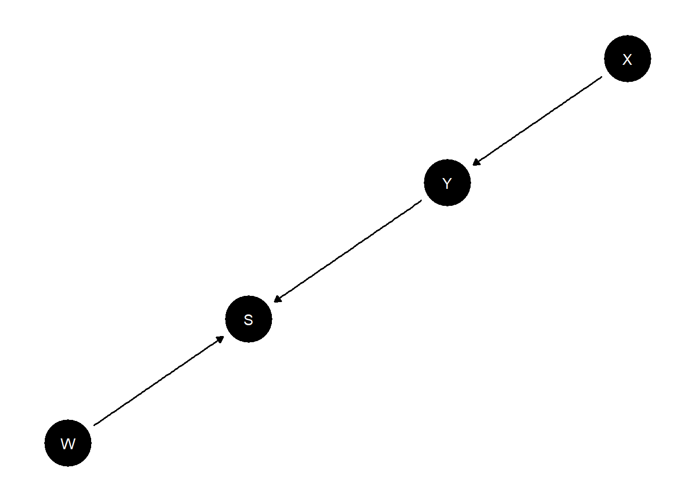

Chapter 8 Process tracing
8.1 What to infer from what
The simplest application of the CausalQueries package is to figure out what inferences to make about a case upon observing within-case data, given a model. One might observe many pieces of evidence and have to figure out how to update from these jointly.
In Integrated Inferences we explore an inequality-democratization model where for a case with low inequality and democratization (say) one is interested in whether the democratization was due to the low inequality. In the simple model, inequality can give rise to popular mobilization which in turn forces democratization; or alternatively, inequality could prevent democratization by generating a threat from elites. In addition other forces, such as international pressure, could give rise to democratization. The question is: how do we update on our beliefs that low inequality caused democratization when we observe mobilization or international pressure?
model <- make_model("I -> M -> D <- I; P -> D") |>
set_restrictions(c(
"(M[I=1] < M[I=0])",
"(D[I=1] > D[I=0]) | (D[M=1] < D[M=0]) | (D[P=1] < D[P=0])")) We can read inferences directly from query_model:
query_model(model,
query = list(`I = 0 caused D = 1` = "D[I=1] != D[I=0]"),
using = "parameters",
given = c("I==0 & D==1",
"I==0 & D==1 & M==0",
"I==0 & D==1 & M==1",
"I==0 & D==1 & P==0",
"I==0 & D==1 & P==1",
"I==0 & D==1 & M == 0 & P==0",
"I==0 & D==1 & M == 1 & P==0",
"I==0 & D==1 & M == 0 & P==1",
"I==0 & D==1 & M == 1 & P==1")) |> kable()| Query | Given | Using | Case.estimand | mean |
|---|---|---|---|---|
| I = 0 caused D = 1 | I==0 & D==1 | parameters | FALSE | 0.4384 |
| I = 0 caused D = 1 | I==0 & D==1 & M==0 | parameters | FALSE | 0.4750 |
| I = 0 caused D = 1 | I==0 & D==1 & M==1 | parameters | FALSE | 0.3939 |
| I = 0 caused D = 1 | I==0 & D==1 & P==0 | parameters | FALSE | 0.6154 |
| I = 0 caused D = 1 | I==0 & D==1 & P==1 | parameters | FALSE | 0.3404 |
| I = 0 caused D = 1 | I==0 & D==1 & M == 0 & P==0 | parameters | FALSE | 0.6667 |
| I = 0 caused D = 1 | I==0 & D==1 & M == 1 & P==0 | parameters | FALSE | 0.5714 |
| I = 0 caused D = 1 | I==0 & D==1 & M == 0 & P==1 | parameters | FALSE | 0.3929 |
| I = 0 caused D = 1 | I==0 & D==1 & M == 1 & P==1 | parameters | FALSE | 0.2632 |
We see in this example that learning about a rival cause—the moderator \(P\) (international pressure)—induces larger changes in beliefs than learning about the mediator, \(M\) (mobilization). The two clues substitute for each other marginally.
The importance of different clues depends however on what one wants to explain. In the next analysis, we see that if we want to know if inequality explained democratization, learning that \(M=0\) has a large impact on beliefs.
| Query | Given | Using | Case.estimand | mean |
|---|---|---|---|---|
| I = 1 caused D = 1 | I==1 & D==1 | parameters | FALSE | 0.1277 |
| I = 1 caused D = 1 | I==1 & D==1 & M==0 | parameters | FALSE | 0.0000 |
| I = 1 caused D = 1 | I==1 & D==1 & M==1 | parameters | FALSE | 0.1500 |
| I = 1 caused D = 1 | I==1 & D==1 & P==0 | parameters | FALSE | 0.2308 |
| I = 1 caused D = 1 | I==1 & D==1 & P==1 | parameters | FALSE | 0.0882 |
Note that inferences are taken here based on the model made by make_model, without any updating of the model using data. In this sense the approach simply makes the model used for process tracing explicit, but it does not justify. It is possible however to first update a model using data from many cases and then use the updated model to draw inferences about a single case.
8.2 Probative value and \(d\)-separation
Observation of a node (a “clue”) is potentially informative for a query when it is not \(d\)-separated1 from query-relevant nodes (See Integrated Inferences, Ch 6).
An implication of this is that the observation of some nodes may render other nodes more or less informative. From the graph alone you can sometimes tell when additional data will be uninformative for a query.
To wit:
model <- make_model("X -> Y -> S <- W") |>
set_restrictions(complements("Y", "W", "S"), keep = TRUE)
plot(model)
query_model(model,
query = "Y[X=1] > Y[X=0]",
using = "parameters",
given = c("X==1",
"X==1 & W==1",
"X==1 & S==1",
"X==1 & S==1 & W==1",
"X==1 & Y==1",
"X==1 & W==1 & S==1 & Y==1")) |> kable()| Query | Given | Using | Case.estimand | mean |
|---|---|---|---|---|
| 1 | X==1 | parameters | FALSE | 0.25 |
| 2 | X==1 & W==1 | parameters | FALSE | 0.25 |
| 3 | X==1 & S==1 | parameters | FALSE | 0.25 |
| 4 | X==1 & S==1 & W==1 | parameters | FALSE | 0.40 |
| 5 | X==1 & Y==1 | parameters | FALSE | 0.50 |
| 6 | X==1 & W==1 & S==1 & Y==1 | parameters | FALSE | 0.50 |
In this example \(W\) is not informative for the \(X\) causes \(Y\) query (a query about \(\theta^Y\), a parent of \(Y\)), when \(Y\) and \(S\) are unobserved (Row 1 = Row 3). It becomes informative, however, when \(S\), a symptom of \(Y\), is observed (Row 3 \(\neq\) Row 4). But when \(Y\) is observed neither \(S\) nor \(W\) are informative (Row 5 = Row 6).
The reason is that \(W\) is \(d\)-separated from \(\theta^Y\) when \(Y\) and \(S\) are unobserved. But \(S\) is a “collider” for \(Y\) and \(W\) and so \(W\) becomes informative about \(Y\) once \(S\) is observed, and hence of \(\theta^Y\) (so long as \(Y\) is unobserved). When \(Y\) is observed however now \(S\) and \(W\) become \(d\)-separated from \(\theta^Y\) and neither is informative.
8.3 Foundations for Van Evera’s tests
Students of process tracing often refer to a set of classical “qualitative tests” that are used to link within-case evidence to inferences around specific (often case-level) hypotheses. The four classical tests as described by Collier (2011) and drawing on Van Evera (1997) are “smoking gun” tests, “hoop” tests, “doubly decisive” tests, and “straw-in-the-wind” tests. A hoop test is one which, if failed, bodes especially badly for a claim; a smoking gun test is one that bodes well for a hypothesis if passed; a doubly decisive test is strongly conclusive no matter what is found, and a straw-in-the-wind test is suggestive, though not conclusive, either way.
In some treatments (such as Humphreys and Jacobs (2015)) formalization involves specifying a prior that a hypothesis is true and an independent set of beliefs about the probability of seeing some data if the hypothesis is true and if it is false. Then updating proceeds using Bayes’ rule.
This simple approach suffers from two related weaknesses however: first, there is no good reason to expect these probabilities to be independent; second, there is nothing in the set-up to indicate how beliefs around the probative value of clues can be established or justified.
Both of these problems are easily resolved if the problem is articulated using fully specified causal models.
Many different causal models might justify Van Evera’s tests. We illustrate using one in which the requisite background knowledge to justify the tests can be derived from a factorial experiment and in which one treatment serves as a clue for the effect of another.
For the illustration we first make use of a function that generates data from a model with a constrained set of types for \(Y\) and a given prior distribution over clue \(K\).
van_evera_data <- function(y_types, k_types)
make_model("X -> Y <- K") |>
set_restrictions(labels = list(Y = y_types), keep = TRUE) |>
set_parameters(param_type = "define", node = "K", parameters = c(1 - k_types, k_types)) |>
make_data(n = 1000)We then use a function that draws inferences, given different values of a clue \(K\), from a model that has been updated using available data. Note that the model that is updated has no constraints on \(Y\), has flat beliefs over the distribution of \(K\), and imposes no assumption that \(K\) is informative for how \(Y\) reacts to \(X\).
van_evera_inference <- function(data)
make_model("X -> Y <- K") |>
update_model(data = data) |>
query_model(query = "Y[X=1] > Y[X=0]",
given = c(TRUE, "K==0", "K==1"),
using = "posteriors")We can now generate posterior beliefs, given \(K\), for different types of tests where the tests are now justified by different types of data, coupled with a common prior causal model.
Results:
doubly_decisive <- van_evera_data("0001", .5) |> van_evera_inference()
hoop <- van_evera_data(c("0001", "0101"), .9) |> van_evera_inference()
smoking_gun <- van_evera_data(c("0001", "0011"), .1) |> van_evera_inference()
straw_in_wind <- van_evera_data(c("0001", "0101", "0011"), .5) |> van_evera_inference()| Query | Given | Using | Case.estimand | mean | sd | conf.low | conf.high |
|---|---|---|---|---|---|---|---|
| Q 1 | - | posteriors | FALSE | 0.5091 | 0.0155 | 0.4793 | 0.5390 |
| Q 1 | K==0 | posteriors | FALSE | 0.0094 | 0.0052 | 0.0023 | 0.0222 |
| Q 1 | K==1 | posteriors | FALSE | 0.9763 | 0.0074 | 0.9591 | 0.9886 |
| Query | Given | Using | Case.estimand | mean | sd | conf.low | conf.high |
|---|---|---|---|---|---|---|---|
| Q 1 | - | posteriors | FALSE | 0.4605 | 0.0224 | 0.4174 | 0.5033 |
| Q 1 | K==0 | posteriors | FALSE | 0.0367 | 0.0231 | 0.0069 | 0.0933 |
| Q 1 | K==1 | posteriors | FALSE | 0.5122 | 0.0243 | 0.4646 | 0.5594 |
| Query | Given | Using | Case.estimand | mean | sd | conf.low | conf.high |
|---|---|---|---|---|---|---|---|
| Q 1 | - | posteriors | FALSE | 0.5240 | 0.0226 | 0.4799 | 0.5692 |
| Q 1 | K==0 | posteriors | FALSE | 0.4801 | 0.0243 | 0.4323 | 0.5283 |
| Q 1 | K==1 | posteriors | FALSE | 0.8991 | 0.0371 | 0.8132 | 0.9566 |
| Query | Given | Using | Case.estimand | mean | sd | conf.low | conf.high |
|---|---|---|---|---|---|---|---|
| Q 1 | - | posteriors | FALSE | 0.4919 | 0.0216 | 0.4492 | 0.5340 |
| Q 1 | K==0 | posteriors | FALSE | 0.3075 | 0.0285 | 0.2544 | 0.3649 |
| Q 1 | K==1 | posteriors | FALSE | 0.6828 | 0.0301 | 0.6224 | 0.7404 |
We see that these tests all behave as expected. Importantly, however, the approach to thinking about the tests is quite different to that described in Collier (2011) or Humphreys and Jacobs (2015). Rather than having a belief about the probative value of a clue, and a prior over a hypothesis, inferences are drawn directly from a causal model that relates a clue to possible causal effects. Critically, with this approach, the inferences made from observing clues can be justified by reference to a more fundamental, agnostic model, that has been updated in light of data. The updated model yields both a prior over the proposition, belief about probative values, and guidance for what conclusions to draw given knowledge of \(K\).
8.4 Clue selection: clues at the center of chains can be more informative
Model querying can also be used to assess which types of clues are more informative among a set of informative clues. Consider a chain linking \(X\) to \(Y\) via \(M_1\), \(M_2\), \(M_3\). To keep things simple let’s assume that the chain is monotonic: no node in the chain has a negative effect on the next node in the chain.
Which clue is most informative for the proposition that \(X\) caused \(Y\) in a case with \(X=Y=1\)?
In all case we will conclude that \(X\) did not cause \(Y\) if we see a 0 along the chain (since a 1 can not cause a 0). But what do we conclude if we see a 1?
model <- make_model("X -> M1 -> M2 -> M3 -> Y") |>
set_restrictions(labels = list(M1 = "10", M2 = "10", M3 = "10", Y = "10"))In imposing monotonicity and using default parameter values we are assuming that the effect of each node on the next node is 1/3. What does this imply for our query? We get the answer using query_model.
query_model(model,
query = "Y[X=1] > Y[X=0]",
given = c("X==1 & Y==1", "X==1 & Y==1 & M1==1", "X==1 & Y==1 & M2==1",
"X==1 & Y==1 & M3==1", "X==1 & Y==1 & M1==1 & M2==1 & M3==1"),
using= "parameters") |> kable()| Query | Given | Using | Case.estimand | mean |
|---|---|---|---|---|
| Q 1 | X==1 & Y==1 | parameters | FALSE | 0.0244 |
| Q 1 | X==1 & Y==1 & M1==1 | parameters | FALSE | 0.0357 |
| Q 1 | X==1 & Y==1 & M2==1 | parameters | FALSE | 0.0400 |
| Q 1 | X==1 & Y==1 & M3==1 | parameters | FALSE | 0.0357 |
| Q 1 | X==1 & Y==1 & M1==1 & M2==1 & M3==1 | parameters | FALSE | 0.0625 |
A couple of features are worth noting. First without any data our beliefs that \(X\) caused \(Y\) are quite low. This is due to the fact that even though the ATE at each step is reasonably large, the ATE over the whole chain is small, only \((1/3)^4)\) (incidentally, a beautiful number: 0.01234568).
Second we learn from which nodes we learn the most. We update most strongly from positive evidence on the middle mediator. One can also show that not only is there greater updating higher if a positive outcome is seen on the middle mediator, but the expected reduction in posterior variance is also greater (expected reduction in posterior variance takes account of the probability of observing different outcomes, which can also be calculated from the model given available data.)2
Last, while we update most strongly when we observe positive evidence on all steps, even that does not produce a large posterior probability that \(X=1\) caused \(Y=1\). Positive evidence on a causal chain is often not very informative. Explanations for this are in P. Dawid, Humphreys, and Musio (2019).
References
\(d\)-separation is a key idea in the study of directed acyclic graphs; for an introduction see \(d\)-separation without tears.↩︎
These quantities can be calculated by the
CQtoolspackage, still in alpha, via:CQtools::expected_learning(model, "Y[X=1] > Y[X=0]", given = "X==1 & Y==1", strategy = "M2")↩︎